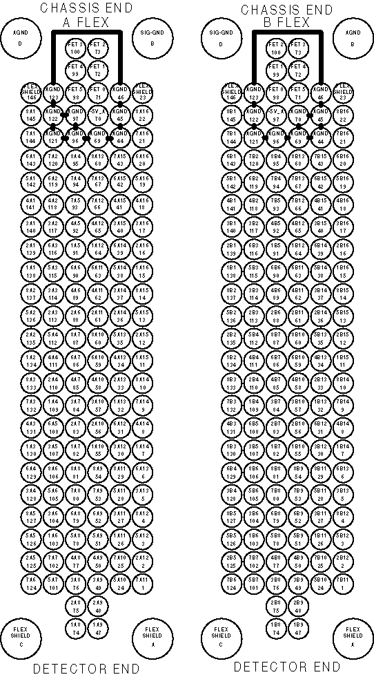
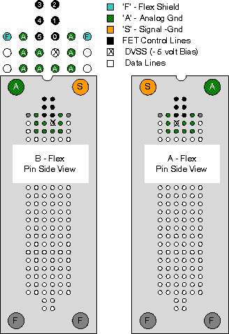

Operating Documentation
Direction 5193855-800, Rev# 4
LS 5.X RT Ltd. Access Service Information Adv
Operating Documentation |
| Last Revised: | March 15, 2005 |
Detector Flexes
The flex lead diagram in Illustration 1 show the pin relationship to its associated detector module. Example: 8A16, 22 translates to -> Row 8, A side, Cell 16, Flex pin 22
Illustration 1: DAS 16 Backplane Flex Pin Assignments

Illustration 2 shows the FET control lines, DVSS (- 5vdc bias for detector FETs) and guard band (analog grounds) to prevent random FET settings due to leakage currents.
Illustration 2: DAS 16 Detector Flex Lead FET Control Pinout
